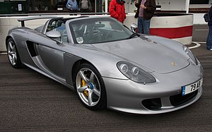

2002
A Porsche ingressou no segmento de SUVs como o Cayenne, modelado com base no ousado design da geração 996 do icônico Porsche 911. Compartilhando plataforma, transmissão e opções de motor com o VW Touareg e o Audi Q7, o Cayenne ofereceu, inicialmente, as versões S e Turbo, ambos equipados com motores V8 gerando 340 cv e 450 cv, respectivamente. Os tempos de aceleração de 0 a 100 km/h eram de 10,2 segundos para a versão S e 8,3 segundos para a Turbo. Este SUV representou uma expansão estratégica da Porsche, mantendo sua essência esportiva mesmo em um formato importado.
2004
A Porsche gerou polêmica com o lançamento do superesportivo Carrera GT, projetado para superar os modelos da Ferrari. Lançado em 2004, o carro não incluía um sistema de rádio, pois o fabricante argumentava que o som do motor era a melhor trilha sonora. No entanto, a instalação do sistema de som era uma opção para os proprietários. O distintivo som agudo do motor levou ao apelido de "Apito". Críticas surgiram de puristas devido ao motor central, em contraste com a tradição dos motores trazeiros dos Porsche 911. A transmissão era exclusivamente manual, pois os engenheiros valorizavam a experiência de troca de marchas pelo piloto. Apesar de a produção ter sido interrompida antes das 1500 unidades planejadas, o Carrera GT é reconhecido como um dos melhores supercarros já desenvolvidos.
2009
A Porsche inovou ao introduzir o Panamera, um coupé de 4 portas com motor dianteiro, partilhando a base com o Cayenne. Destinado a um público que busca esportividade com amplo espaço interno, o Panamera apresenta um interior tecnologicamente avançado e motores V6 e V8 fabricados em Stuttgart. A carroceria, já fornecida pintada pela fábrica da VW em Hannover, passa pela montagem final em Leipzig. No entanto, a Grande Recessão e a redução em 50% das importações para os EUA, principal mercado da Porsche, agravaram os problemas financeiros. Em 2009, a VW adquiriu 49% das ações da Porsche, esperando uma fusão em 2011. Com o apoio do Catar, a Volkswagen emergiu vitoriosa, consolidando uma fusão que inclui marcas como Audi, Seat, Skoda, Bentley, Bugatti, Lamborghini, Scania , MAN SE, e a própria Volkswagen.